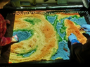

software, hardware and electronics hacking
Need help with an interesting software, hardware or electronics project? Don't hesitate to contact me!
scroll right to see the selected works ⇒
ARMap Sandbox
Interactive Augmented Reality Mapping Sandbox. Kinect reads the height map of the world created from sand, computer translates height into color, which is then projected on sand surface via a digital projector.

Originally a collaboration with Tomas Mudrunka, based on the work by Oliver Kreylos. Now powered by a custom lightweight open-source software capable of running on embedded devices like Raspberry Pi or Beagleboard.
Mirrsaic - NOW
A collaboration with Prokop Bartonicek. My responsibility was to create a software capable of visualizing the scene with sun rays and mirror reflections and calculation of custom-cut mirror shapes and calibration pattern.


In an urban scene we can see solar reflections of geometric forms. Abstract composition described by the sun is approaching from above towards the ground. After several hours, the shapes overlap, thus creating a powerful light cluster, which is changing very fast in an interlocking inscription. Individual light fragments at the moment of encounter rendering the word "NOW" which accurately captures the transience of the moment.
Today, the availability of efficient design and lighting technologies, mapping and generative art is often oblivious to the basic rules of light, time and space. I decided to create a impressive public space light installation that would work within the elementary principles. Mirrsaic, as a process and a tool was programmed, generated and manufactured using the most modern techniques and technologies, which are not directly seen by the viewer. The most complicated project tool is hidden; it remains just a wall, a daylight system and several mirrors in the exact shape, the exact place at the exact time.


{kind=link}
{kind=link}
{kind=link}
{kind=link}
{kind=link}